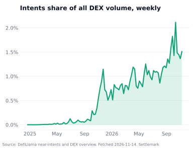
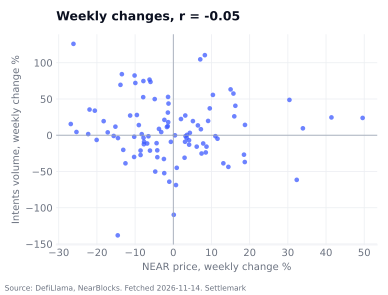
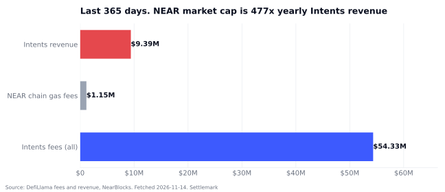
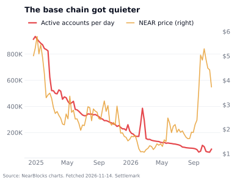
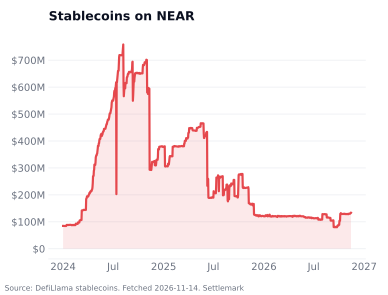

NEAR is becoming a settlement layer. Its token has not caught up.
People now use NEAR Intents to move and swap money across many chains, and that use keeps growing whatever the NEAR price does. Very little of that money reaches NEAR holders yet. We test both halves on public data, give the bad news as much room as the good, and rebuild every number with one command.
The use is real. The value capture is not there yet.
Intents usage moves on its own and keeps taking share of onchain trading. But the token keeps a thin slice of that flow, stablecoins on NEAR shrank and the base chain got quieter. NEAR is a long term buy only if value capture improves. Watch revenue, not price.
We test each half separately, so one cannot hide the other.
Usage is independent of price
If Intents were just NEAR speculation, its weekly volume would rise and fall with the NEAR price. It does not.
Supported by the dataHolders capture little of the flow
The money moving through Intents is large next to the fees that reach the network and its token holders.
Supported, and it is the bear caseThe case for, and the case against, side by side.
Every underlined number links to the public API it was computed from. Window 2024-12-10 to 2026-11-13, 99 full weeks.
+Evidence for
- Weekly Intents volume went from $0.8M to $859.7M (first versus last 4 weeks). The NEAR price went from $5.30 to $4.38 over the same span.
- Intents share of all onchain DEX volume: 0.003%, then 1.03%, then 1.46% (first, previous and latest 13 weeks).
- Weekly changes in Intents volume and NEAR price correlate at −0.05 (90% bootstrap interval −0.21 to +0.12). Close to zero.
- Neither leads the other: price last week against Intents this week gives +0.06; the reverse gives +0.05.
- Not crypto beta: correlation with weekly Bitcoin returns is −0.08 over 51 weeks. It does follow the overall DEX market (+0.34), as a trading venue should.
- Over the last 365 days Intents settled $32.97B and charged $54.3M in fees.
−Evidence against
- Holders capture little. Intents kept $9.4M as revenue in the last 365 days, about 2.8 basis points of volume. NEAR gas fees were $1.1M. Market cap $4.48B is 477x yearly Intents revenue and 3,906x yearly chain fees.
- Levels point the wrong way. Log weekly Intents volume against log NEAR price correlates at −0.52: usage grew while price fell.
- The base chain got quieter. Daily active accounts averaged 775,618 in the first 13 weeks and 70,872 in the latest 13. Some of that may be bots leaving.
- Stablecoins on NEAR shrank from $164.5M a year ago to $133.4M now. A settlement layer for money should hold more dollars, not fewer.
- Volume can flatter. Another entry in this track, near-thesis, found public swaps match only part of the reported volume on sampled days. Our share numbers inherit that.





Five tests that would prove us wrong. 0 of 5 are met today.
The thresholds live in settlemark.toml and are checked on every rebuild, whether or not they help the claim. They were set on 14 Nov 2026, the day of the analysis, so they are not a pre registration made weeks earlier.
| Falsifier | Test | Value now | Result |
|---|---|---|---|
| F1 Intents usage moves with NEAR price | weekly change correlation above 0.5 | −0.05 | Not met |
| F2 Intents is losing ground | share of all DEX volume, last 13 weeks below the 13 weeks before | +0.43 pts | Not met |
| F3 NEAR price leads Intents usage | lagged correlation above 0.3 | +0.06 | Not met |
| F4 Intents is just crypto beta | weekly change correlation with Bitcoin above 0.5 | −0.08 | Not met |
| F5 Holders capture the flow | market cap below 50x yearly Intents revenue (if met, the small capture half is wrong) | 477x | Not met |
We would also change our mind if Intents share falls two quarters in a row, if the weekly correlation with price rises above 0.5 over any 26 week window, or if a fee switch or buyback pushes market cap below 50x yearly revenue. That last one would make the case bullish rather than conditional.
One command rebuilds everything. Nothing is typed by hand.
- Fetch nine datasets from DefiLlama, NearBlocks and CoinGecko, with retries and a local cache. Every row stores its source URL and fetch time.
- Validate each file against a schema: dates sorted and unique, numbers finite and non negative.
- Analyse weekly changes, not levels, so trends cannot fake a correlation. Bootstrap intervals use a fixed seed, so results repeat exactly.
- Render six charts, THESIS.md and this page from results.json.
Limits
- The rebuild uses free public APIs only. The Intents Explorer API needs a partner token and was not used.
- A by hand cross check on the NEAR BigQuery public dataset counted 2,968,076 to 5,144,507 receipt actions a day from 2026-11-08 to 2026-11-13 (CSV). It is a 7 day snapshot, not a trend.
- Weekly correlations over about two years are noisy. Early Intents weeks are tiny, so their changes are large.
- NearBlocks active accounts can miss signers hidden behind relayers.
- CoinGecko's free tier gives 365 days, so the Bitcoin test covers fewer weeks.
- If a source changes its method, a rebuild changes the numbers. That is intended.